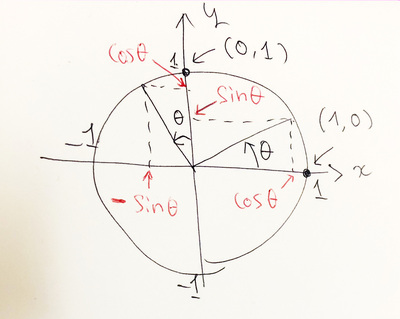
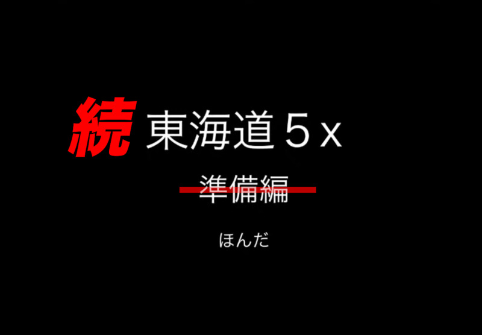

{kind=link}
ZAF ２０２１年３月
今回の内容
今回はきちんと、ゲスト・スピーカーをお迎えします！
- 前座 - ZAM 創刊号、印刷版きました！
- 第１部 コンピュータ会話教室 - コンピュータと会話しよう（市來）
- 第２部 続東海道５x （ホンダナオ）
- 座談会
（前座）
ZAM 創刊号の印刷版きました！
前回、無事にオンラインで創刊された ZAM １月号
URL: https://zenkei-ai-forum.github.io/ZAM202101/

その後、自分へのご褒美的なノリで、１０部ほど、印刷を発注してみました
(https://forum.ai.zenkei.com/t/topic/349/28)

頼んだのは『ちょ古っ都製本工房』 https://www.chokotto.jp/

- B5
- ページ数 30ページ
- 印刷部数 10冊
- 納期 １０営業日コース
- 本文
- モノクロ印刷（スタンダード）
- 上質７０ｋｇ
- 表紙
- 色上質最厚口・１３５ｋｇ（高品質フルカラー印刷）
- オプション加工 表２・３ モノクロ印刷
- 合計（税込）2,230円
ZAM 創刊号の印刷版、届きました！
{kind=link}
{kind=link}
背表紙！
intoxicate （タワレコのフリーペーパー）と比べてみた！
表紙２・３の印刷に挑戦！
欲しい人いますか？
- １０冊（プラス余丁１部）しか刷りませんでした
- 関係者（執筆者、ZOOM および YouTube 参加者ほか）に配ったら、 もう残りありません
- ...
- ...正確に言うと、まだ２冊あります
- 欲しい人、いますか？
- １冊 1,500 円です！（これで元が取れる！！）
- ...
- ...というのは、もちろん、冗談です
- （いなければ『数理クイズ』の賞品にでもしようかな、と思ってます）
{kind=link}
ところで、 ZAM ２月号は？
- たしか
- ZAF 開催日 ＝ ZAM 発行日
- ...
- ということは
- 今日、３月３１日（水）は
- ZAM ２月号の発行日！
- ...
- ZAM ２月号、どこ？
ZAM ２月号は……
鋭意執筆中です！
- ２月は、ぼくの独演会だったので、執筆者はぼくだけ
- ということで、今回は Re:VIEW は使わずに、
LaTeX で直接書くことにしました - ただし、 ZAM は「本」じゃなくて「雑誌」なので、
できるだけ「雑誌」っぽくしたいな、と思ってます - つまり、
- 写真とかいっぱいレイアウトされた誌面
- ２段組
近日、正式にリリースしますが、
今日は一部誌面をチラ見せ！


コンピュータ会話教室
2021年の今こそ、コンピュータと会話しよう
- 語学学習は、生涯学習の文脈で、みなさんの関心にあると思います。
- まずは「英会話」、現在のグローバル・スタンダードな共通言語。
英語ができればとりあえず世界を歩くことはできる（かな） - 将来を見て、また、日本という立地を考えて、
やはり今は「中国語」でしょう、という方もいらっしゃるでしょう
- まずは「英会話」、現在のグローバル・スタンダードな共通言語。
- ここに別の視点、 ZAF 的視点として、
将来（もしかすると）人間よりも（ある分野においては）高い能力を、
間違いなく獲得するであろう、地球上の種族「コンピュータ」と、
会話できるって、すてきじゃない？- （と、ちょっとキャッチーなコピーを書いてみました）
- （背景としては、「数理クイズ」も同じ文脈で企画したものですが、 クイズ制作者の怠慢で不完全燃焼でした。）
- プログラムとは
- プログラムのパワー１、 ２、 ３ 『for ループ』
- 『for ループ』とは - C言語編、 具体的に、 Python編、 抽象化
- ベクトル、 行列、 回転行列
- 行列とベクトルの積のプログラム、 行列と行列の積のプログラム
第１回： for ループ
- 新企画『コンピュータ会話教室』の第１回目のお題がいきなり『for ループ』です。
- 「なんで？」と思った人が大半かなと思います。
- 英語なら "Hello! How are you doing?" とか
"This is a pen" なのに、
コンピュータ会話は『for ループ』？
- ちょっと説明しますね、なぜ『for ループ』なのか
- コンピュータって何？
- 日本語だと「電子計算機」かなと思います（誰もそんな風に呼びませんが）
- 「電卓」って、ありますよね
- 電卓も計算できます。つまり「電子計算機」ではあります
- 質問：電卓とコンピュータの違いは何でしょう？
- 電卓は計算ができますが、
逆にいうと、計算しかできません - もっというと、１度に１つの計算しかできません
- コンピュータは「プログラム」ができます
（計算機には「プログラム」ができません）- というより（ここでの定義として） 「計算機」とは「プログラム」ができない 電子計算機とする、が正しいかな
- 世の中にはプログラムできる電卓はありますからね
- 電卓は計算ができますが、
- ということで、
答え：プログラムができること
プログラムとは
- プログラムって何？
- 結論から言うと、コンピュータと人間がコミュニケーションするための言語です
- だから『コンピュータ会話教室』はプログラム言語を喋れるようになることが目的
- 『英会話教室』が英語が喋れるようになることが目的のように
- プログラムとは（わかりやすく言うと）
コンピュータに対する指示文書です- 電卓は、
１つの指示をその場で受け取って、
その場で答えます - コンピュータは、
指示の書かれた文書（プログラム）を受け取って
その指示に沿って計算し
その答えを返します - 例：
電卓 コンピュータ 「1 + 3 =」と電卓を叩くと
「4」と表示するprint(1+3)
というプログラムを実行すると
「4」と表示する
- 電卓は、
プログラムのパワー１
- プログラムは何がすごいの？
- プログラムには沢山の指示を書き込むことができて、
それを受け取ったコンピュータはその指示を全て計算することができます - これが仕事の「効率化」ですね！
（みんな「効率化」は大好き）
- プログラムには沢山の指示を書き込むことができて、
- 例：
電卓 コンピュータ 「1 + 3 =」と電卓を叩くと 「4」と表示する 以下のプログラムを実行すると print(1+3) print(2+4) print(3+5) print(4+6)
以下の答えが表示される 4 6 8 10
「2 + 4 =」と電卓を叩くと 「6」と表示する 「3 + 5 =」と電卓を叩くと 「8」と表示する 「4 + 6 =」と電卓を叩くと 「10」と表示する - めでたし、めでたし
- でも、いつもいつも、 1+3 とか 4+6 が計算したいとは限らない……
- と、人はわがままになるものです
- コンピュータは、そんな人にも忍耐強く付き合ってくれます
プログラムのパワー２
- プログラムは「話を一般化できる」
- （擬人化が過ぎるかな？）
- 要するに、プログラムは「変数」が使えます
- 例：
1+3, 2+4, 3+5, 4+6 が計算したい時
x=1, y=3 で10+5, 11+6, 12+7, 13+8 が計算したい時
x=10, y=5 で以下のプログラムを実行すると print(x+y) print(x+1+y+1) print(x+2+y+2) print(x+3+y+3)
以下の答えが表示される 4 6 8 10
以下のプログラムを実行すると print(x+y) print(x+1+y+1) print(x+2+y+2) print(x+3+y+3)
以下の答えが表示される 15 17 19 21
- 注目するポイントは、
プログラムは全く同じということ- いちいち、プログラムを書き換えることなく
いろんな足し算が
（今の場合、かなり特殊なもの４つだけど）
けいさんできる！
- いちいち、プログラムを書き換えることなく
- めでたし、めでたし
- でも、４行も「print」とか打ち込みたくない……
- と、人は強欲になるものです
- コンピュータは、そんな人にも忍耐強く付き合ってくれます
プログラムのパワー３ 『for ループ』
- お待たせしました、ここで出てくるのが『for ループ』です
- 個人的には、プログラムの本質は『for ループ』だ、というくらいに思ってます
- もう１つは、サブルーチン（関数）かな
- 『for ループ』とは、繰り返し処理を簡単に書く文法です
- 例：
for ループを使わないで書いた場合 C 言語で
for ループを使って書いた場合Python で
for ループを使って書いた場合print(x+y) print(x+1+y+1) print(x+2+y+2) print(x+3+y+3)
for (int i = 0; i < 4; i ++) print(x+i + y+i)for i in range(4): print(x+i + y+i)
『for ループ』とは - C言語編
- 『for ループ』はイディオムだと思えばいいです（会話教室っぽい！）
- C 言語の for ループは （条件など具体的に書かれているので） 分かりやすい
- 次のプログラムの意味を説明します
for (int i = 0; i < 4; i ++) { 「繰り返し処理」 } - カッコの中の、セミコロン（；）で区切られた３つの部分の意味：
- 「int i = 0」は「繰り返し処理」に入る前に１度だけ呼ばれる処理
- 今の場合、変数 i を準備し、
値 0 を代入する
- 今の場合、変数 i を準備し、
- 「i < 4」は「繰り返し処理」が継続する条件
- つまり、変数 i の値が４よりも小さい限り、
処理が繰り返される
- つまり、変数 i の値が４よりも小さい限り、
- 「i ++」は各「繰り返し処理」が終わった後に実行される処理
- 今の場合、１回ずつ「繰り返し処理」が終わった後、
変数 i の値を１ずつ増やしていく
- 今の場合、１回ずつ「繰り返し処理」が終わった後、
- 「int i = 0」は「繰り返し処理」に入る前に１度だけ呼ばれる処理
『for ループ』とは - 具体的に
- 例：「繰り返し処理」が printf(i); の場合の処理
for (int i = 0; i < 4; i ++) { printf(i); }- まず変数 i に 0 が代入される
- 繰り返し処理が実行され「0」と表示される
- 「i ++」が実行され i の値が１つ増えて 1 となる
- この i の値は条件を満たしているので、繰り返し処理は継続する
- （今 i の値は 1 が入っている）
- 繰り返し処理が実行され「1」と表示される
- 「i ++」が実行され i の値が１つ増えて 2 となる
- この i の値は条件を満たしているので、繰り返し処理は継続する
- （今 i の値は 2 が入っている）
- 繰り返し処理が実行され「2」と表示される
- 「i ++」が実行され i の値が１つ増えて 3 となる
- この i の値は条件を満たしているので、繰り返し処理は継続する
- （今 i の値は 3 が入っている）
- 繰り返し処理が実行され「3」と表示される
- 「i ++」が実行され i の値が１つ増えて 4 となる
- この i の値は条件を満たさないので、繰り返しを終了する
- for ループの終了
- まず変数 i に 0 が代入される
『for ループ』とは - Python編
- Python の for ループを解説
- C 言語の for ループを書き換えると、以下のようになる
for i in range(4): print(i) - 慣れるまでは、これをイディオムとして丸暗記してもいいですが、
ここでは簡単にその中身を説明しましょう - 「range(4)」はイテレータ (iterator)
- 「イテレータ」は抽象的なオブジェクトで、
「順番に値を出してくれるオブジェクト」くらいの意味 - 具体的なイメージとしては、配列 (Array) をそのまま思い浮かべていいです
（実際、昔の Python では range(4) は [0, 1, 2, 3] と言う配列だった） - 配列というのは、複数の値を並べたものくらいに思っていてよい
- 「イテレータ」は抽象的なオブジェクトで、
- 「for （変数） in （イテレータ）:」構文
- 「イテレータ」から順番に要素を取り出して、
「変数」に入れて、
「繰り返し処理」を行う
- 「イテレータ」から順番に要素を取り出して、
『for ループ』の抽象化
- Python の for ループは結構深い
- C 言語の（素朴で原始的な） for ループに比べて、
「イテレータ」という概念を使って抽象化されている
- C 言語の（素朴で原始的な） for ループに比べて、
- この辺の感覚を知りたい方は、是非、以下のすごく印象的な
Ned Batchelder の３０分の講演ビデオをごらんください
https://youtu.be/EnSu9hHGq5o

ベクトル
実は、今日あえて『for ループ』を取り上げたのは
（温めていた『コンピュータ会話教室』という企画という意味の他に）
もう１つの理由があります！
- みなさん、配列 (Array) はご存知ですよね？（上で少し言及しました）
- 例
[0, 1, 2, 3]
- 例
- 質問：ベクトル (vector) はご存知ですか？
- 高校の数学の授業を思い出せば「あの矢印ね」となります
- ２次元空間（平面）のベクトル v は２つの成分 (x, y) で表される矢印
- ３次元空間のベクトル w は ３つの成分 (x, y, z) で表される矢印
- ここでは、長さが２とか３の配列と思っていて十分です
- （ちなみにその時の配列の長さは、 考えている空間の次元ということになります）
行列
- 次の質問：行列 (matrix) はご存知ですか？
- さて、高校の授業を覚えていれば、ベクトルと一緒に習ったはずです
- 「１次変換」とか
「ベクトルの回転」とか
覚えてますか？ - ２次元空間（平面）の行列 A は 2x2 個の要素（数字）を持つ量です
- その４つの成分は (Axx, Axy, Ayx, Ayy) の４つです
- 原点を中心に角度 θ の回転を表す行列は
A= Axx Axy Ayx Ayy = cos θ -sin θ sin θ cos θ - この行列がどうして回転行列なのかは、
行列とベクトルの積が以下にように定義されるからです
A・x = Axx Axy Ayx Ayy ・ x y = Axx * x + Axy * y Ayx * x + Ayy * y - 実際に回転行列とベクトル x = (x, y) の積を計算すると
A・x = cos θ * x - sin θ * y sin θ * x + cos θ * y - まだピンと来ないかな？
回転行列
- 簡単な場合、つまり
- x = (1, 0) の時（つまり右向きベクトル）の場合と
- x = (0, 1) の時（つまり上向きベクトル）の場合
- 上の結果
からA・x = cos θ * x - sin θ * y sin θ * x + cos θ * y - x = (1, 0) の時は (cos θ, sin θ) というベクトル
- x = (0, 1) の時は (-sin θ, cos θ) というベクトル
- つまり、それぞれ実際に θ 回転していますね！

{kind=link}
行列とベクトルの積のプログラム
- 行列とベクトルの積を、プログラムしてみよう！
- ベクトル vec を配列で、行列 A を２次元配列で書いて
vec = [x, y] A = [[Axx, Axy], [Ayx, Ayy]]
行列とベクトルの積をプログラムで書くとdef mat_vec_prod(A, vec): y = [0, 0] for i in range(2): for j in range(2): y[i] += A[i][j] * vec[j] return yとなりますね？- 上で書いた式と比べてみましょう
A・x = Axx Axy Ayx Ayy ・ x y = Axx * x + Axy * y Ayx * x + Ayy * y
- 上で書いた式と比べてみましょう
行列と行列の積のプログラム
- 「行列とベクトルの積」を拡張すると「行列と行列の積」になります
def mat_mat_prod(A, B): C = [[0, 0], [0, 0]] for i in range(2): for j in range(2): for j in range(2): C[i][j] += A[i][k] * B[k][j] return C- （これは、こういうものだと思ってください）
- 上のプログラムに出てくる「range(2)」の 2 は、
今考えている空間が２次元だからでした - 任意の次元 n に対する「行列と行列の積」は、従って
def mat_mat_prod(A, B): C = [[0]*n for _ in range(2)] for i in range(n): for j in range(n): for j in range(n): C[i][j] += A[i][k] * B[k][j] return C- （n 次元行列 C の初期化は、ここではこう言うものだと思ってください）
- （コメント：この range(2) は「行列」だから 2 になってることに注意）
突然の『数理クイズ』
（長かった……ここからが本題）
質問です：
（n が大きい時）
行列と行列の積を計算するのに必要な計算量はどうなるでしょう？
- つまり次の関数の計算時間は n に対してどう変化するでしょう？
def mat_mat_prod(A, B): C = [[0]*n for _ in range(2)] for i in range(n): for j in range(n): for j in range(n): C[i][j] += A[i][k] * B[k][j] return C
この質問は、簡単ですね
ということで、
本当のクイズ：
上のプログラムよりも効率的に行列の積を計算することはできますか？
回答お待ちしてます！
という問いに対する面白い最新の回答を見かけたので「紹介しよう！」と思ったのですが、
ここまでで結構時間を食ったので……
今月の「数理クイズ」ということにしましょう！
みなさんの回答、お待ちしてます！
- プログラムとは
- プログラムのパワー１
- プログラムのパワー２
- プログラムのパワー３ 『for ループ』
- 『for ループ』とは - C言語編
- 『for ループ』とは - 具体的に
- 『for ループ』とは - Python編
- 『for ループ』の抽象化
- ベクトル
- 行列
- 回転行列
- 行列とベクトルの積のプログラム
- 行列と行列の積のプログラム
- 突然の『数理クイズ』
- 回答お待ちしてます！
続東海道５x（ホンダナオ）
2020年8月の ZAF 『東海道 5x 準備編』

2020年8月の ZAF 『東海道 5x 準備編』のつづき
の予定です！
月刊 ZAM ３月号
ですね！
今日の発表者 ＝ ZAM ３月号の執筆陣 です！
- いちき
- ホンダさん
がんばりましょう！
締め切りは ZAF ４月のイベントの日
つまり４月２８日（水）
お、連休前ですね（金曜日に休みを取る人にとっては）